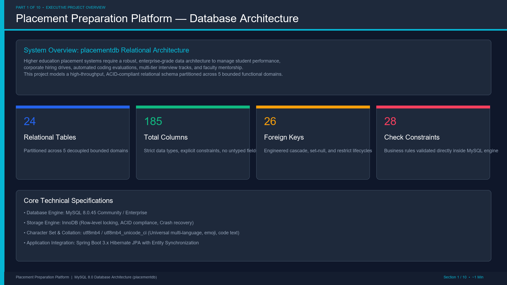

Placement Preparation Platform — Database Video Presentation
10-Minute Complete Architectural Walkthrough with AI Voiceover | MySQL 8.0.45

⏮ Previous
▶ Play Presentation
Next ⏭
🔄 Restart
00:00 / 00:00
Slide 1 of 10
Voiceover Script & Narration:
Press "Play Presentation" to begin the full 10-minute presentation with synchronized audio and slide transitions.
Presentation Sections (10 Minutes Total • 1 Min Per Section)